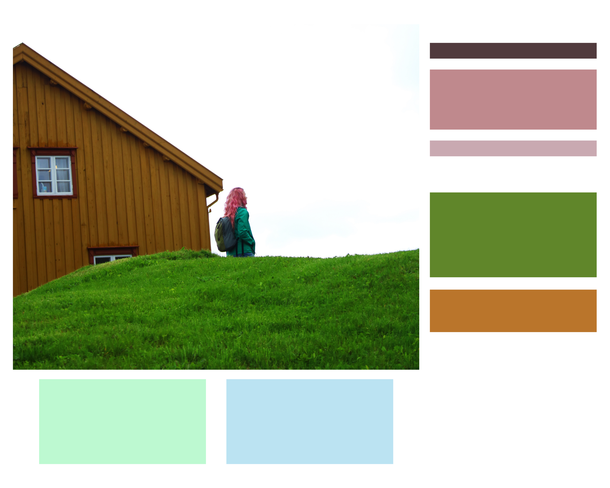
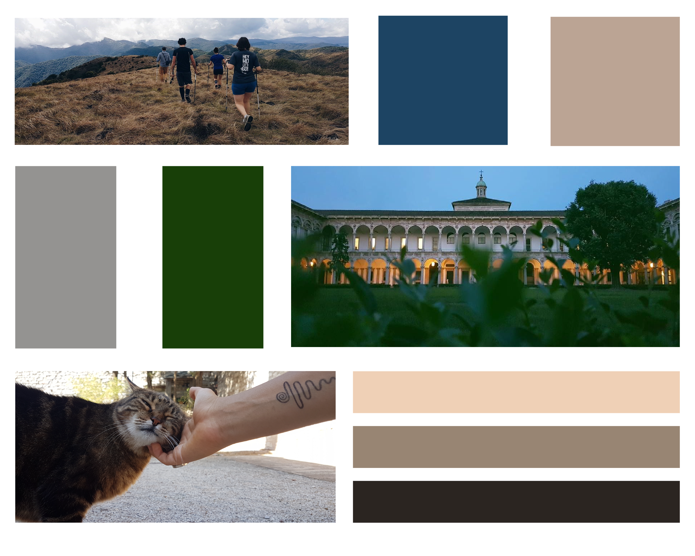
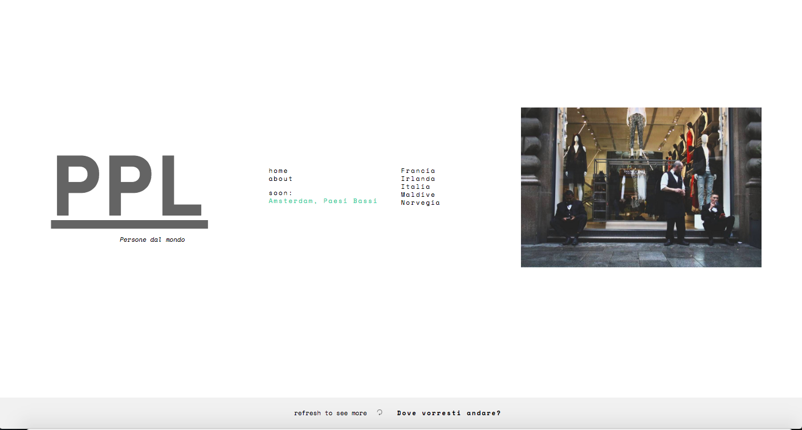
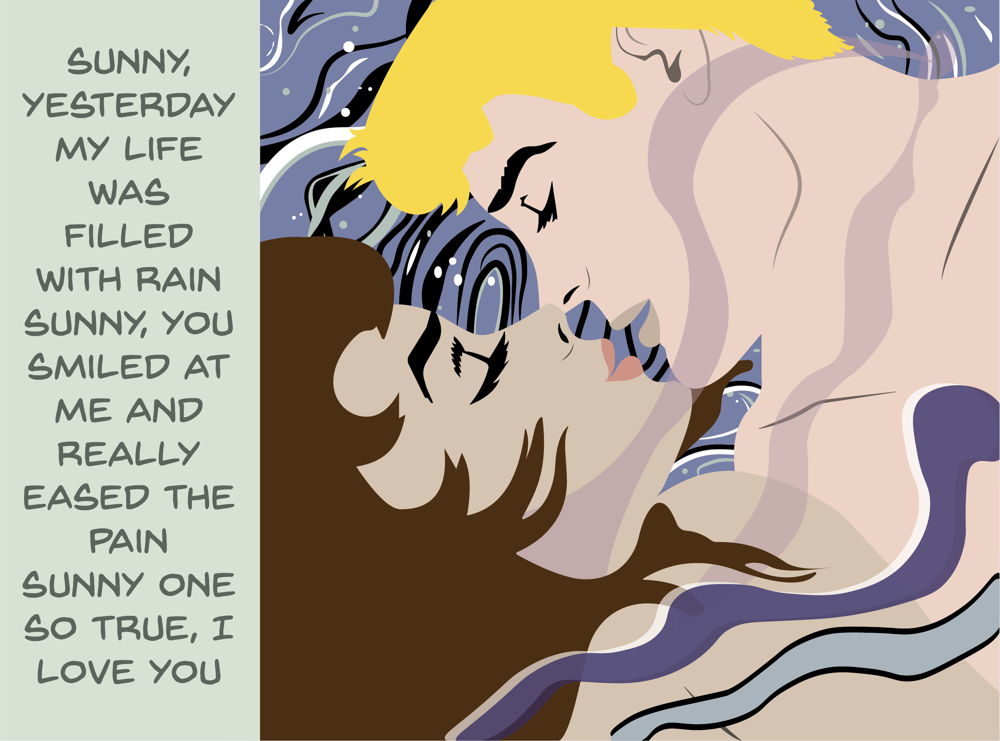

la vita estetica
Ma cosa vuole dire vivere esteticamente e cosa vuol dire vivere eticamente? Cosa è l’estetica nell’uomo?, e cosa è l’etica? A ciò risponderò: L’estetica nell’uomo è quello per cui egli spontaneamente è quello che è; L’etica è quello per cui diventa quello che diventa. Chi vive tutto immerso, penetrato nell’estetica, vive esteticamente.
Il mio nome è Maria Alessandra. Sono nata l'otto ottobre del 1997.
Ho trascorso la mia vita facendo un passo sul pavè milanese e l'altro su una rotaia del tram.
Dopo vent'anni, questa caotica città continua ad ispirarmi per il suo essere sempre viva ed energica.


Palette colori della pagina web personale
realizzata a luglio 2018
Blog personale creato con lo scopo collezionare i volti e i protagonisti dei miei viaggi, raccontare le loro storie e le mie interazioni.
è tutt'ora in fase di realizzazione
realizzato a giugno 2018
visitalo qui Io e la mia migliore amica ci conosciamo dal primo anno di asilo. Come meglio festeggiare un'amicizia che diventa maggiorenne se non con una felpa personalizzata?
Io e la mia migliore amica ci conosciamo dal primo anno di asilo. Come meglio festeggiare un'amicizia che diventa maggiorenne se non con una felpa personalizzata?
realizzata a settembre 2016
Palette colori della pagina web personale
realizzata a luglio 2018

Blog personale creato con lo scopo collezionare i volti e i protagonisti dei miei viaggi, raccontare le loro storie e le mie interazioni.
è tutt'ora in fase di realizzazione
realizzato a giugno 2018
visitalo qui
 Realizzata a dicembre 2017
Io e la mia migliore amica ci conosciamo dal primo anno di asilo. Come meglio festeggiare un'amicizia che diventa maggiorenne se non con una felpa personalizzata?
realizzata a settembre 2016